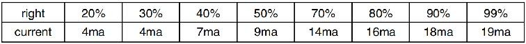
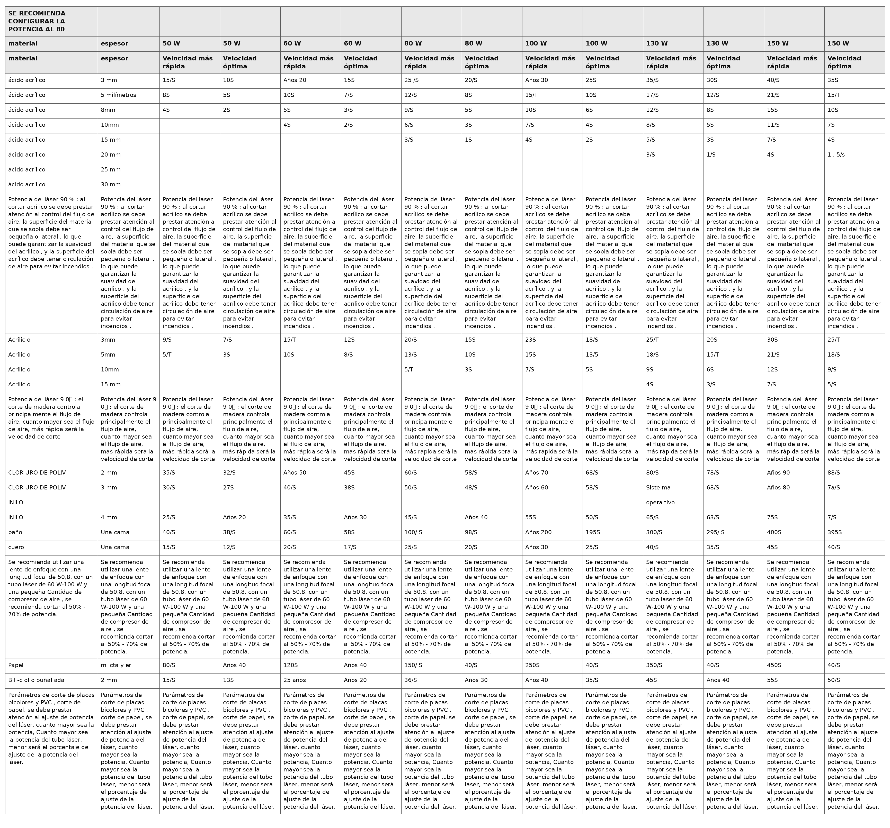

OPERACIÓN
1. Descripción general del funcionamiento
- Utilice este grabador láser únicamente siguiendo todas las
instrucciones proporcionadas en este documento. El incumplimiento de las pautas adecuadas que se detallan en este documento puede provocar daños materiales y lesiones personales.
- En esta sección se describirán solo algunas de las opciones y
características que ofrece el Software operativo. Antes de comenzar a utilizar la máquina, asegúrese de haber leído todo el manual (especialmente la información de seguridad mencionada anteriormente), así como todas las advertencias proporcionadas por la propia máquina.
2. Instrucciones generales de funcionamiento
- Paso 1.
Crea el diseño que quieres grabar. Puedes hacerlo directamente en el software de grabado, o puede utilizar cualquier
- Paso 2.
Conecte el equipo complementario y las herramientas al producto y Conecte la fuente de alimentación. Llene la entrada de agua con agua purificada o destilada para la circulación de agua incorporada. El nivel del agua debe agregarse a la línea de seguridad de nivel de agua verde. Nota: (El nivel del agua no debe estar demasiado lleno, para no desbordarse ).
- Paso 3.
Retire el tubo de humo. Un extremo del tubo de humo está conectado al puerto de escape de humos del equipo y el otro extremo se conecta a un dispositivo de extracción de humos externo o auxiliar. Nota: (Utilice una abrazadera de tubo para asegurar la conexión y evitar que se caiga).
- Paso 4.
Levante el botón de parada de emergencia y use los botones en la parte delantera del El gabinete permite abrir el panel de control de la máquina de grabado. Cargue el diseño que desee directamente desde una memoria USB o a través de la conexión de un ordenador a la grabadora.
- Paso 5.
Abra la cubierta del grabador, verifique que la asistencia de aire esté funcionando correctamente y ajuste la mesa si es necesario. Se recomiendan las camas celulares para la mayoría de las aplicaciones. La cama se puede elevar o bajar utilizando el control del eje Z en la parte frontal del gabinete para acomodar una variedad de materiales de diferentes espesores.
- Paso 6.
Coloque la muestra de material sobre la mesa. La posición estándar se encuentra en la esquina superior izquierda de la mesa. Esto se puede cambiar moviendo la ubicación de su diseño o el origen del grabador usando el panel de control o el software de grabado. Para manipular materiales más grandes, puede abrir la puerta de paso delantera o trasera, o ambas, al mismo tiempo. Cuando el láser esté activo, no inserte nada en la superficie de trabajo a través de una puerta de paso que no sea el material. Preste especial atención a los humos y el polvo que pueden liberarse a través de estas puertas. Asegúrese de que su sistema de ventilación sea lo suficientemente robusto como para absorber todos los subproductos o desgastar el material. EPI necesarios para garantizar la salud de los usuarios y transeúntes.
- Paso 7.
Enfoque el láser colocando la herramienta de enfoque acrílico sobre el material. y levantando con cuidado la mesa. El cabezal del láser debe tocar apenas la parte superior de la herramienta de acrílico sin aplicar ninguna presión, asegurándose de que la distancia de grabado sea la correcta. (Nuevamente, nunca intente estar en la mesa sin material). De cualquier manera, el láser está enfocado. Cierre la tapa.
- Paso 8.
Personalice el contraste y la profundidad del grabado de su diseño ajustando parámetros en el software de grabado o directamente desde el panel de control. Si Las instrucciones de grabado detallan la configuración de potencia en miliamperios, utilice lo siguiente Tabla de conversión para encontrar la configuración de potencia adecuada:


Tabla de conversión entre potencia configurada y corriente.
El umbral mínimo es del 10 %. El láser no emitirá ningún láser con un valor inferior a este. No se recomienda utilizar el tubo láser a plena carga, especialmente durante largos periodos de tiempo. La potencia máxima recomendada se establece en el 70 %, ya que el uso prolongado de una cantidad superior a esta acortará la vida útil del láser. Para aumentar la profundidad del grabado, aumente la energía por unidad de área incrementando la potencia del láser o el número de anillos o reduciendo el parámetro de velocidad. Sin embargo, un grabado demasiado profundo puede degradar la calidad de la imagen, especialmente en el caso del material de revestimiento.
Al trabajar con nuevos materiales, tenga en cuenta que siempre debe comenzar con el valor más bajo de sus posibles ajustes. Si el efecto no es lo suficientemente fuerte, siempre puede repetirse más de una vez. Vuelva a ejecutar el bucle de diseño o vuelva a ejecutarlo con configuraciones más potentes hasta crear el efecto deseado. La resolución debe establecerse generalmente en 500 puntos por pulgada. En algunos casos, reducir la resolución de la imagen puede ayudar, lo que reduce el efecto de quemado y Aumentar la energía de los pulsos y mejorar así la calidad de las imágenes producidas en determinados materiales, como ciertos plásticos.
- Paso 9.
Abra el tubo láser insertando y girando la llave láser. Para reducir el Riesgo de descarga eléctrica: intente tocar el grabador con una sola mano a la vez una vez abierto el tubo láser.
- Paso 10.
Presione ejecutar para pausar el proceso de grabado de su diseño. De manera similar, incluso si está Utilice gafas protectoras y no mire fijamente el láser activo de forma continua. Sin embargo, tenga cuidado con posibles problemas, como chispas o incendios, y esté preparado para apagar incendios rápidamente si es necesario.
- Paso 11.
Una vez que el láser se detenga, verifique la calidad de la primera pasada y ajuste el láser. Ajuste los parámetros en el panel de control o en el software según sea necesario para producir el efecto deseado. Durante el grabado y el corte repetidos, controle regularmente el tanque de la bomba para mantener la temperatura del agua por debajo de los 100 °F (38 °C). Si se alcanza esta temperatura, deje de trabajar y permita que el grabador se enfríe antes de seguir usándolo.
- Paso 12.
Cuando haya terminado de grabar, cierre el software de grabado y apague el dispositivo la máquina en el siguiente orden: encendido del láser, panel de control, ventilación, sistema de refrigeración por agua y botón de encendido de emergencia. Retire la llave del láser del panel de control.
- Paso 13.
Limpie completamente el banco, vaciando el soporte inferior de cualquier residuo.
3. Descripciones específicas de materiales
Las siguientes instrucciones son recomendaciones que pueden ayudar a acelerar el trabajo seguro con una variedad de materiales. Los usuarios deben investigar los requisitos de seguridad y grabado para sus materiales específicos para evitar el riesgo de posibles problemas como incendios, polvo peligroso, humos corrosivos y tóxicos. Una vez que sepa que el producto es seguro o que cuenta con el equipo de protección adecuado, puede ser útil grabar una matriz de prueba de pequeñas cajas producidas a varias velocidades y configuraciones de potencia para descubrir las configuraciones ideales para su diseño. O comience con un bajo consumo de energía y una configuración rápida, vuelva a ejecutar el diseño tantas veces como sea necesario, utilizando una intensidad de láser que aumente progresivamente.
Cerámica
Al grabar en cerámica, generalmente se utiliza una potencia media o alta. El uso de más circuitos en lugar de una potencia más alta y una velocidad más baja puede ayudar a evitar la rotura del material durante el proceso de trabajo. Tenga en cuenta los riesgos para la salud que plantea el polvo del grabado en cerámica, especialmente en aplicaciones industriales repetitivas. Según el material y la carga de trabajo, es posible que se requiera un ventilador o incluso un sistema de ventilación completo para resolver el problema. De manera similar, es posible que los operadores y otras personas en el área de trabajo deban usar EPI respiratorios, como máscaras y respiradores.
Piedra
Al tallar todo tipo de piedras, generalmente se utilizan potencias medias y velocidades medias a rápidas. Al igual que con la cerámica y el vidrio, tenga cuidado con el polvo que se genera (especialmente para aplicaciones industriales repetitivas) y tome medidas similares para garantizar la seguridad de los usuarios y otras personas en el área de trabajo.
Textiles
Cuando se trata de tallar textiles como tela y lana, se suele utilizar poca potencia y alta velocidad. Al igual que con el cuero, se debe prestar especial atención a la posibilidad de fuego y polvo.
Vidrio
Al grabar vidrio, generalmente se utilizan alta potencia y baja velocidad. Al igual que con la cerámica, sería útil ejecutar más ciclos en un ajuste más bajo para evitar grietas. Se debe tener cuidado al grabar vidrio y fibras de carbono para evitar combinar ajustes que produzcan una intensidad de láser suficiente para alterar la integridad estructural de las fibras de sus componentes, lo que daría como resultado marcas borrosas. Se debe usar equipo de protección personal para evitar la exposición de ojos, nariz, boca y piel al polvo proveniente del uso de cualquier tipo de material, especialmente para aplicaciones industriales repetitivas. La ropa que se usa cuando se trabaja con fibra de vidrio debe lavarse por separado después.
Cuero
Al grabar vidrio, generalmente se utilizan alta potencia y baja velocidad. Al igual que con la cerámica, sería útil ejecutar más ciclos en un ajuste más bajo para evitar grietas. Se debe tener cuidado al grabar vidrio y fibras de carbono para evitar combinar ajustes que produzcan una intensidad de láser suficiente para alterar la integridad estructural de las fibras de sus componentes, lo que daría como resultado marcas borrosas. Se debe usar equipo de protección personal para evitar la exposición de ojos, nariz, boca y piel al polvo proveniente del uso de cualquier tipo de material, especialmente para aplicaciones industriales repetitivas. La ropa que se usa cuando se trabaja con fibra de vidrio debe lavarse por separado después.
Metal
Las máquinas de grabado láser de CO2 no deben utilizarse para marcar, grabar o cortar metal. Son más adecuadas para trabajar con revestimientos aplicados a sustratos metálicos y se debe tener cuidado de no intentar trabajar sobre el metal subyacente. Existe una variedad de revestimientos disponibles específicamente para el grabado de CO2 y los usuarios deben seguir las instrucciones proporcionadas, ya que los parámetros varían según el producto y el metal. En general, el trabajo del revestimiento de aluminio debe realizarse más rápido a una potencia menor, mientras que el trabajo del revestimiento de acero puede realizarse más lentamente a una potencia mayor.
Plásticos
El plástico utilizado para el grabado viene en muchos colores y grosores diferentes y tiene muchos revestimientos y acabados diferentes. La mayoría de los plásticos disponibles se pueden grabar y cortar bien con láser. Los plásticos con superficies microporosas parecen proporcionar los mejores resultados porque es necesario eliminar menos material de la superficie. Al grabar plásticos, generalmente se utilizan configuraciones de baja potencia y alta velocidad. Marcar y grabar con demasiada potencia o una velocidad demasiado baja puede concentrar demasiada energía en el punto de contacto, lo que hace que el plástico se derrita. Entre otros problemas, esto puede producir una calidad de tallado deficiente, gases tóxicos e incluso incendios. El grabado de alta resolución puede causar el mismo problema, por lo que se deben preferir los diseños de resolución baja a media para la mayoría de los plásticos.
Goma
Las distintas composiciones y densidades del caucho dan como resultado profundidades de grabado ligeramente diferentes. Se recomienda encarecidamente probar muestras de caucho específico para obtener mejores resultados. Al grabar caucho, a menudo se utiliza una configuración de alta potencia constante y el efecto se crea variando la velocidad del láser. Los materiales de caucho microcelular requieren velocidades mucho más altas que el caucho estándar. El grabado de cualquier tipo de caucho produce mucho polvo y gases. Según la carga de trabajo, es posible que se requiera un equipo de protección personal respirable o un sistema de ventilación completo para resolver el problema.
Papel y cartón
Al grabar una variedad de productos de papel, generalmente se utilizan potencias bajas o medias y velocidades altas. Pruebe las muestras por lote, ya que solo pequeñas diferencias de parámetros pueden distinguir el efecto de ser demasiado claro del efecto de quemar el sustrato. Al igual que con el cuero, se presta especial atención a la posibilidad de incendio, así como al polvo generado durante las aplicaciones repetidas.
Madera
Al igual que con el caucho, existen muchos tipos diferentes de madera, y probar el material específico es esencial para obtener los mejores resultados. En general, las tallas de madera con vetas y colores consistentes son más uniformes. La madera anudada crea un efecto desigual, mientras que la madera de resina crea un mayor contraste en los bordes. Algunas maderas blandas, como la balsa, el corcho y el pino, tallan bien (aunque con poco contraste) a potencias bajas o medias y a altas velocidades. Otras fibras, como el abeto, pueden verse afectadas por fibras desiguales y, a menudo, producirán malos resultados sin importar lo que haga. Las maderas duras, como el cerezo y el roble, tallan bien a potencias altas y velocidades bajas. Los productos de madera artificial pueden variar de una marca a otra, principalmente en función de la composición y la abundancia de su pegamento. El MDF funciona bien, pero crea bordes oscuros cuando se corta.
Además del riesgo de incendio que presenta cualquier producto de madera, se debe tener especial cuidado con el humo que desprende el pegamento que se utiliza en la madera contrachapada y otras maderas artificiales. Algunos son demasiado peligrosos para utilizarlos, mientras que otros requieren una ventilación cuidadosa y aplicaciones industriales repetidas con equipos de protección personal transpirables. También se debe comprobar la toxicidad de la madera, ya que el polvo de algunas maderas naturales, como la adelfa y el tejo, también puede provocar náuseas y problemas cardíacos.
Consulte Datos de uso .
Tabla de parámetros de corte del documento fuente
La siguiente tabla se reproduce como imagen para conservar la estructura de 14 columnas del documento Word original. Los valores se mantienen como aparecen en la fuente; no se han reinterpretado ni recalculado.


Parámetros de corte incluidos en el documento fuente.